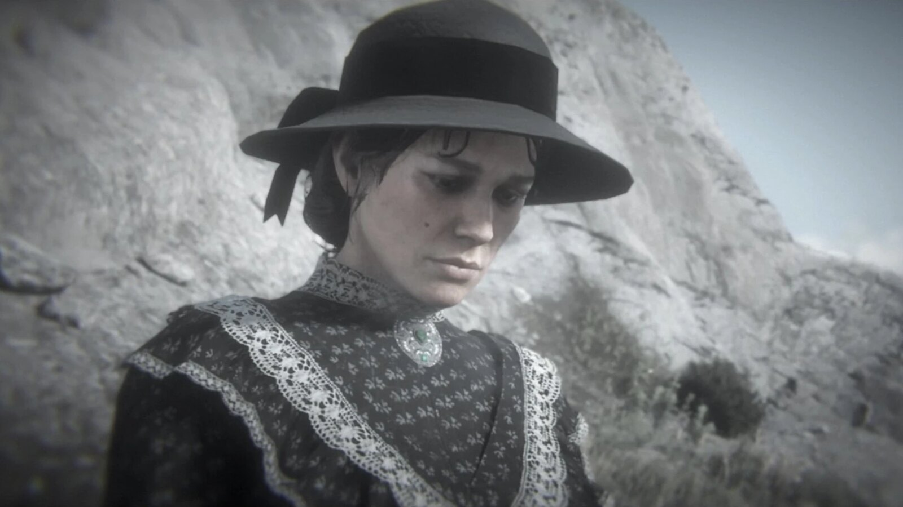
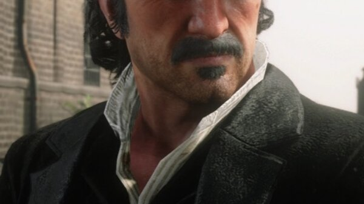
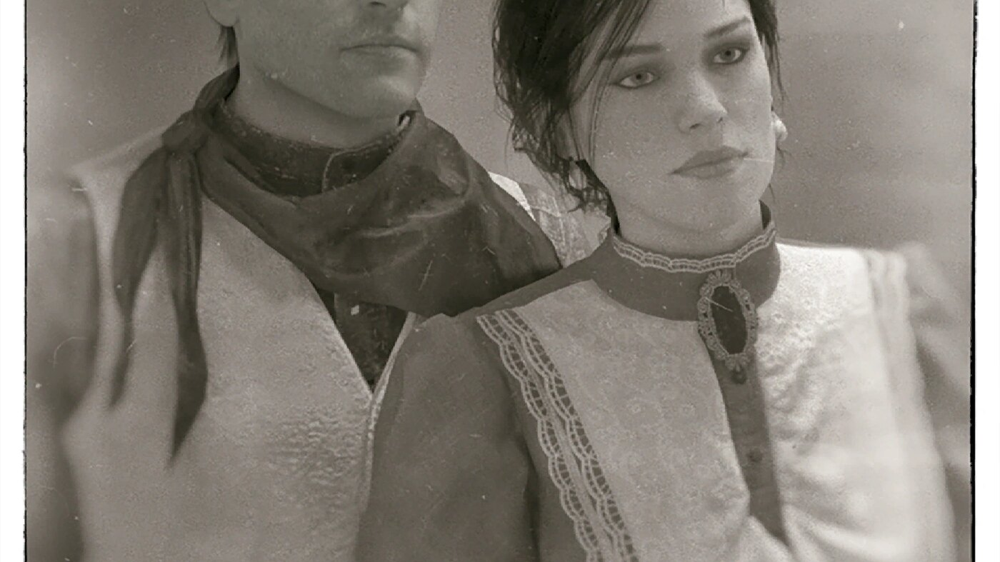

Personnage · Red Dead Redemption 2
Mary Linton
Mary Linton, née Mary Gillis, est l'ancienne fiancée et le grand amour d'Arthur Morgan. Leurs fiançailles ont pris fin des années avant les événements de Red Dead Redemption 2, brisées par la vie de hors-la-loi d'Arthur et la désapprobation de sa famille ; elle a ensuite épousé un certain Barry Linton, aujourd'hui décédé.
Veuve et toujours attachée à Arthur, Mary réapparaît au fil de l'histoire pour lui demander de l'aide avec sa famille en difficulté. Elle incarne la vie rangée et ordinaire à laquelle Arthur a renoncé pour le gang.
- Statut
- En vie
- Nationalité
- Américaine
- Nom de jeune fille
- Gillis
- Nom d'épouse
- Linton
- Relation
- Arthur Morgan (ancien fiancé)
- Jeux
- Red Dead Redemption 2
Biographie
Fiancée à un hors-la-loi
Mary et Arthur se sont fiancés dans leur jeunesse, mais la loyauté de ce dernier envers le gang Van der Linde et le mépris du père de Mary ont mis fin à leur relation. Mary a fini par épouser Barry Linton ; en 1899, elle est veuve.
La famille Gillis
Dans Red Dead Redemption 2, Mary recontacte Arthur pour qu'il l'aide : d'abord à arracher son frère Jamie à une secte, puis à gérer son père malade et exigeant. Leurs retrouvailles sont tendres mais douloureuses, et un avenir commun ne devient jamais vraiment possible.
Personnalité
Mary est douce et empreinte d'une tristesse discrète, tiraillée entre ses sentiments pour Arthur et sa conscience de ce que coûte le fait d'aimer un hors-la-loi. Elle est l'une des rares personnes à voir en Arthur autre chose qu'un homme de main.
Relations

Arthur Morgan
Son ancien fiancé et l'amour de sa vie. Leur lien est le cœur de l'histoire de Mary, et une fenêtre sur l'homme qu'Arthur aurait pu être.

Dutch van der Linde
Le chef de gang dont l'emprise sur Arthur explique en grande partie pourquoi Mary et Arthur n'ont jamais construit de vie commune.

John Marston
Un autre membre du gang qui, contrairement à Arthur, finit par quitter la vie de hors-la-loi pour fonder une famille.
Destin
Mary survit aux événements du jeu. Dans l'épilogue, on la voit se recueillir sur la tombe d'Arthur, hommage silencieux à ce qu'il a représenté pour elle.
Coulisses
Mary apparaît dans Red Dead Redemption 2 (2018) à travers une série de missions de compagnon facultatives. Le jeu laisse au joueur le choix de les suivre ou non, ce qui en fait l'un des fils les plus intimes et les plus faciles à manquer.
Anecdotes
- Son nom de jeune fille est Gillis.
- Elle a été fiancée à Arthur Morgan.
- Elle se recueille sur la tombe d'Arthur dans l'épilogue.
Galerie
